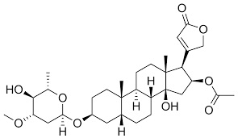
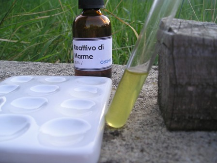
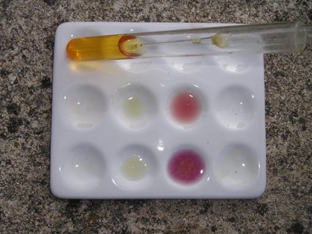

L'ottavo Carnevale della Chimica, ospitato questa volta sul blog Knedliky ha come tema "La chimica delle sostanze bioattive": quale migliore occasione per provare e riferire un paio di test qualitativi che avevo in mente da una montagna di tempo?

Da noi, ed in tutto il Mediterraneo, non c'è persona che non sappia che l'oleandro è una pianta velenosa; certo non dev'essere così dappertutto perchè sembra che specialmente in Sud Africa, dove questa bella pianticella non è autoctona, vi sono molti casi di avvelenamento, soprattutto fra i bambini (la fame dev'essere tanta per riuscire a biascicare queste amarissime foglie...).
Effettivamente l'oleandro (Nerium oleander) è MOLTO velenoso, dato che una sola foglia può essere mortale per un bambino piccolo e poche lo sono altrettanto per un adulto.
Per persone con problemi di cuore, e per animali particolarmente sensibili come le pecore, una dose di foglie di soli 0,5 mg/Kg (una foglia grande pesa mediamente 500 mg) può essere letale!
Il principio attivo è un glicoside cardiotossico, l'oleandrina, quasi identica ai molto più noti glicosidi digitalina e digitossina, derivati dall'altro bellissimo vegetale a nome Digitalis purpurea; ecco qui sotto le formule dell'olendrina e della digitossina:


L'oleandrina pura si presenta come una polvere bianca cristallina, insolubile in acqua, molto amara. Nella pianta dell'oleandro, specialmente nelle foglie, è contenuta per circa lo 0,08% -
Come tutte le sostanze bioattive di origine naturale, tutte queste sostanze sono state usate in medicina, nella fattispecie come potenti cardiostimolanti, in dosi ben controllate a causa della loro elevata tossicità.
Ma mentre la digitalina ha degli effetti più costanti e prevedibili, l'impiego dell'oleandrina è molto più problematico, tanto che in pratica (a parte Russia e Cina) è stata pochissimo usata dalla nostra farmacopea.
Per la modalità di azione biochimica di queste sostanze rimando ad informazioni facilmente reperibili e che esulano dalle finalità di questo blog; aggiungo solo che gli effetti di avvelenamento da parte dell'oleandrina sono forti disturbi a livello gastrointestinale e generale, ma soprattutto gravissimi scompensi cardiaci (bradicardia, tachicardia, aritmia, ecc.) ed a carico del SNC.
Dopo questa allegra e consolante introduzione sulle belle e pericolose proprietà della figlia dell'oleandro, me ne torno nel campo strettamente più consono a questo blog: quello sperimentale, che non manca mai.
Nella foto in apertura si vede un piccolo ma rigoglioso Nerium, con le fogliette pronte per "l'analisi" (in realtà non è stato lui a far da cavia, ma un suo simile molto più "dotato"...).
Seguendo una procedura presente in rete, ma che qui volutamente non riporto (è uno specifico brevetto del 1948) ho isolato un concentrato di oleandrina di qualche mg, sufficiente per le prove confermative che avevo intenzione di fare.
La cristallizzazione della sostanza pura è molto difficile e occorrerebbe operare su quantità maggiori di "materia prima" di quelle che ho usato io: per ora accontentiamoci ampiamente!
Volevo fare due test qualitativi sull'oleandro, molto diversi: quello col reattivo di Marne e quello col reattivo di Kedde.
Il reattivo di Marne si prepara in questo modo:
- sciogliere 1 g di di ioduro di cadmio in una sol. bollente di 2 g di ioduro di potassio in 6 ml di acqua e poi mescolare con 6 ml di soluzione satura di KI; forma un precipitato con diversi alcaloidi.
Il reattivo di Kedde si prepara in questo modo:
- sciogliere 0,3 g di acido 3,5-dinitrobenzoico in 1 ml di etanolo e aggiungere al momento dell'uso 1 ml di NaOH 2N; con cardenolidi (come l'oleandrina) produce una intensa colorazione dal rosso al blù-violetto, che pian piano svanisce.
Test n. 1:

Foto sopra: soluzione diluitissima di oleandrina in etanolo, limpida
Trattamento della medesima con 5 gocce del reattivo di Marne, si nota (in realtà molto meglio che in foto) l'intorbidamento.
Test n. 2

Foto sopra: nel pozzetto a sinistra soluzione diluitissima di oleandrina in etanolo
A destra, trattamento della medesima con 5 gocce del reattivo di Kedde
Il colore del pozzetto in alto si sta già attenuando, fatto tre minuti prima del'altro.
---°°°OOO°°°---
I test qui sopra ripagano piacevolmente le MOLTE ore trascorse a preparare tutto e confermano quello che già si sapeva: entrambi risultano positivi all'oleandrina, c.v.d.
Evviva, alla salute di Nerium e della figlioletta!
(E a proposito di reattivi: a presto con la sintesi dell'acido 3,5-dinitrobenzoico, fatto per l'occasione...).
3 commenti